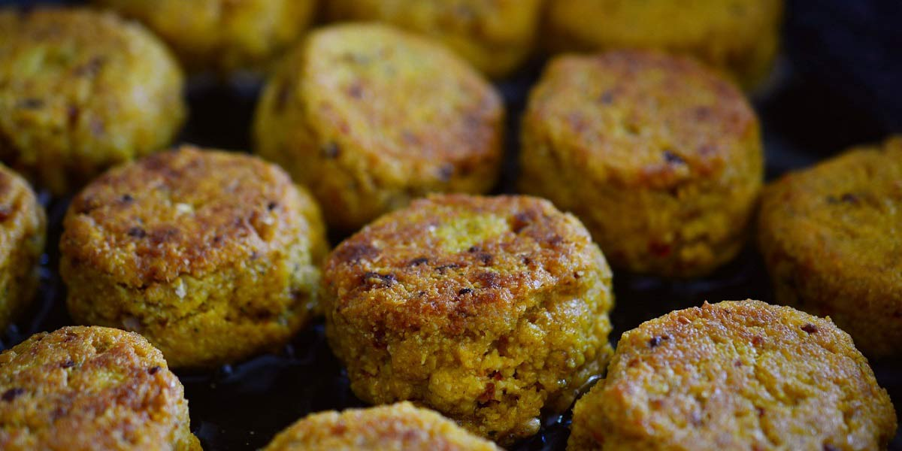

Falafel
Recipe Specification
Ingredients List
| Ingredients | Quantity |
|---|---|
| Tinned Chickpeas | 2x400g |
| Coriander | 40g |
| Garlic Cloves | 4 Cloves |
| Spring Onion | 2 stalks |
| Salt | 1½ tsp |
| Ground Cumin | 20g |
| Ground Coriander | 2 tsp |
| Cayenne Pepper | 1 tsp |
| Cracked Black Pepper | ½ tsp |
| Lemon | ½x1 |
| Corn Flour | 80g |
| Vegetable Oil | 300ml |
Yield: 12 portions
Preparation
- Drain and wash chickpeas.
- Pick and finely chop coriander leaves.
- Peel and crush garlic cloves.
- Finely slice spring onions.
- Juice the half lemon.
- Place chickpeas, garlic, salt, cumin, ground coriander, cayenne pepper, cracked black pepper and lemon juice in a food processor before coarsely blending. Remove from food processor and mix spring onions and fresh coriander in by hand.
- Divide mixture into 12 equal portions. Mould falafel portion into puck shape and place upon a greaseproof tray. Repeat process for all portions and place in the fridge for 2 hours.
- Remove falafels from the fridge and dust with cornflour.
Cooking Instructions
- Place a frying pan over a medium/high heat and add vegetable oil.
- Fry falafels for 1-2 minutes each side until golden brown.

Serving Suggestions
Falafels goes great with pitta bread, pickled red cabbage and shredded lettuce.
Storing instructions
Place in an airtight container before placing in the refrigerator. Consume within 4 days of making it.
Reheating Instructions
Place in the microwave for 2-3 minutes.